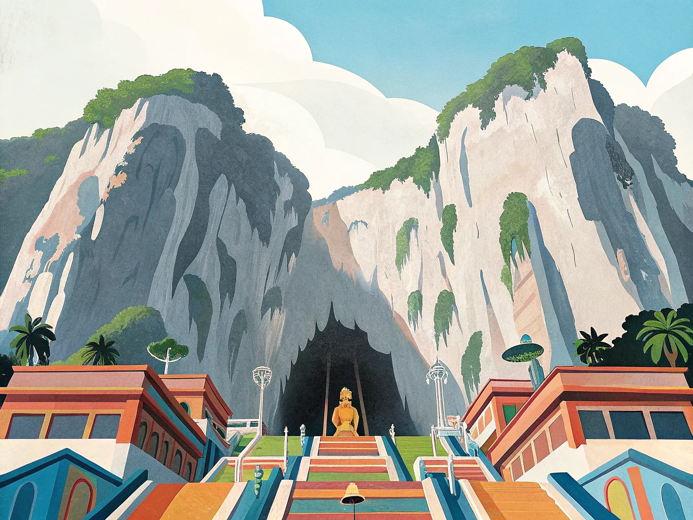
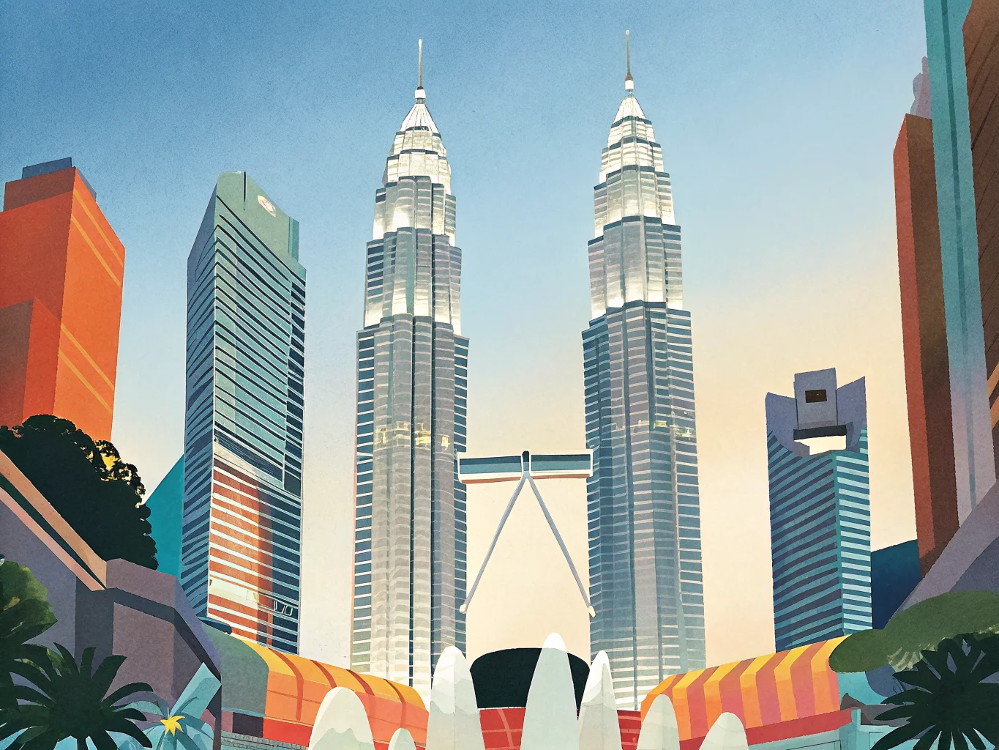
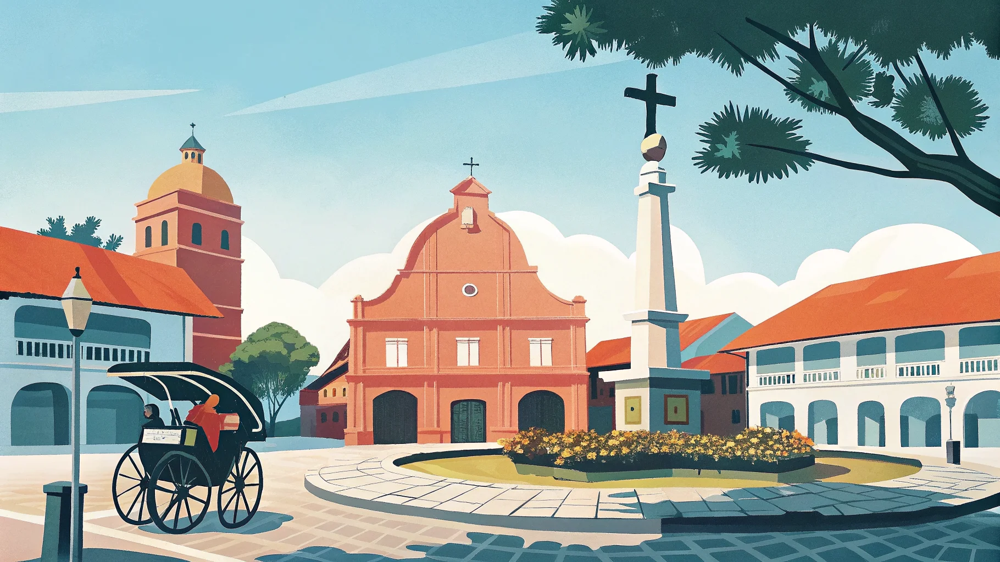
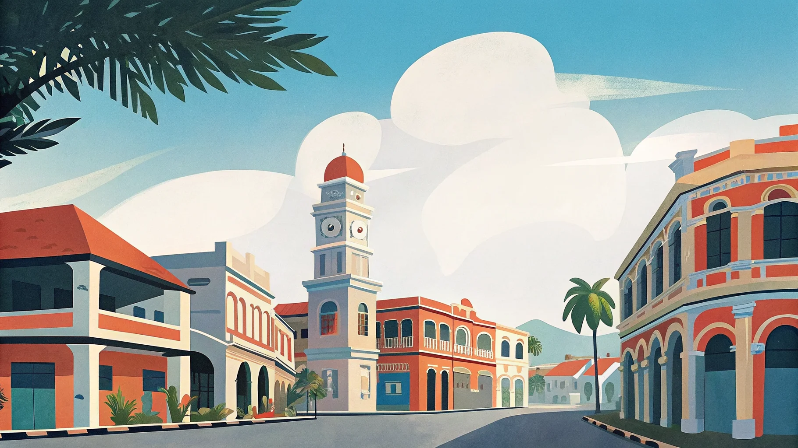
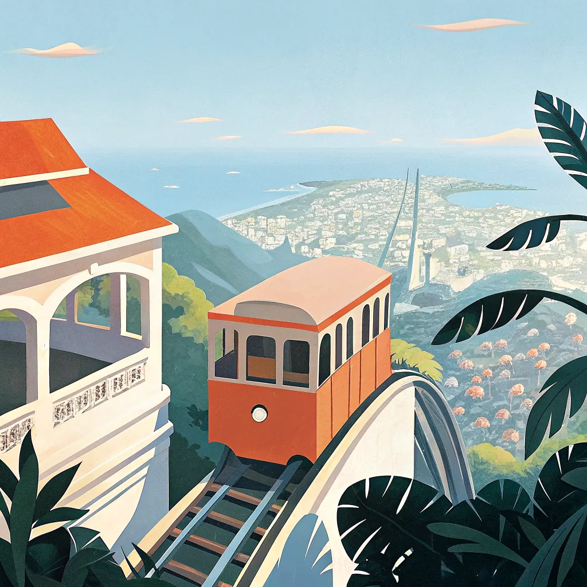

Ada ini?
アダ イニ？ ＝「これはありますか？」
この画面を店員さんに見せてください
多民族の文化が交差するマレーシアは、都市もビーチも一度に楽しめる欲張りな国。KLとマラッカの街並みをじっくり味わう連泊プラン、世界遺産の港町ペナンまで足を延ばすペナン満喫プランがおすすめ。半島を丸ごと味わい尽くしたい人には、管理人が実際に南下した縦断ルートも紹介しています。
同じホテルに連泊することでスーツケースの移動を最小限に抑えたプラン。荷物を気にせず観光に集中できるので、初めてのマレーシアにおすすめです。マレーシアは見どころが多く、全部回ろうとすると移動ばかりで内容が薄くなりがち。エリアを絞って深く楽しむのが、満足度の高い旅のコツです。





このルートは管理人がお盆休みに実際に旅したコースです。SIMなしのスマホをカメラとして使いながら、地球の歩き方片手に地元の人に聞いて移動するスタイルで南下しました。観光地化されていないローカルエリアを通るからこそ、ガイドブックには載らない出会いや景色があります。計画通りにいかないことも含めて旅だと実感できる、そんなルートです。
雨季・乾季・地域別のベストシーズンをチェック。
日程が決まっていない人はここから逆算するのがおすすめ。